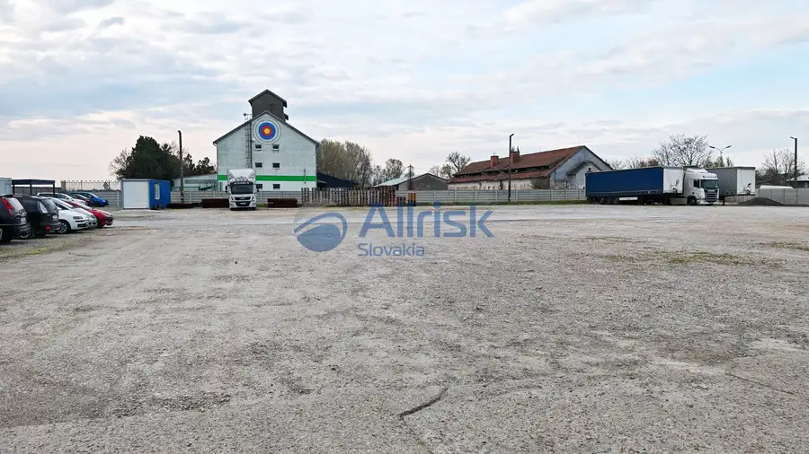
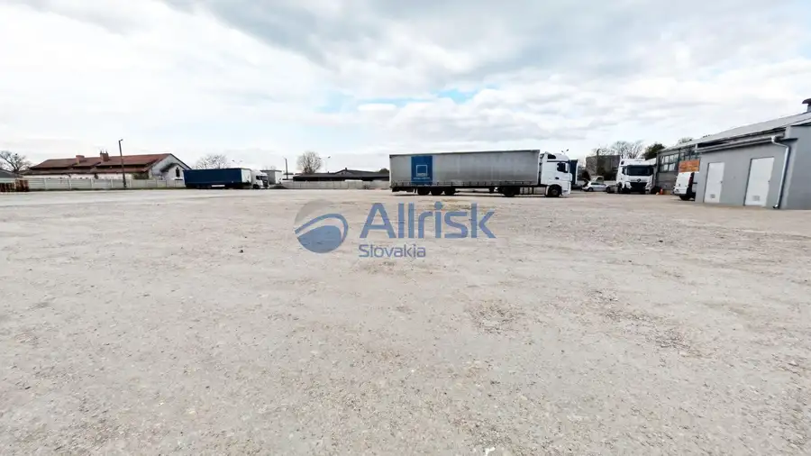
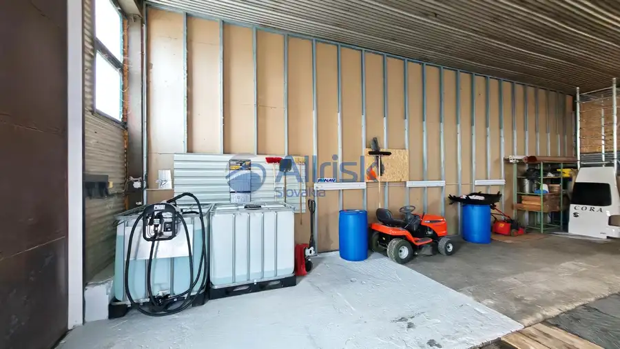
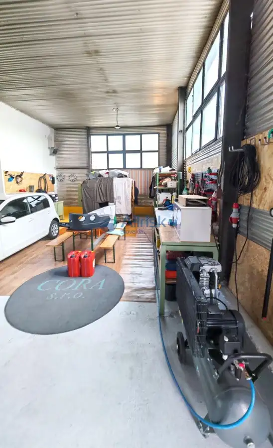
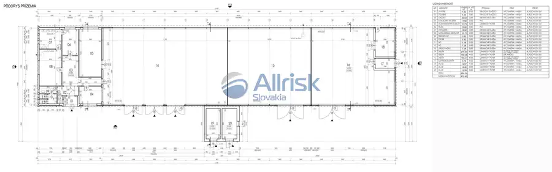
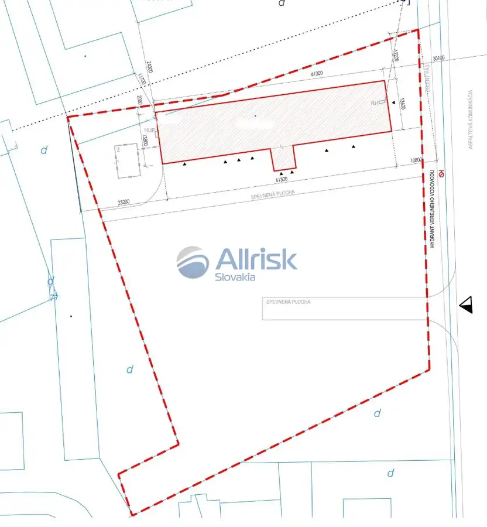

Na predaj: Podnikateľský objekt v obci Trnovec nad Váhom
Trnovec nad Váhom






- Plocha800 m²
- StavČiastočná rekonštrukcia
- VlastníctvoOsobné
O nehnuteľnosti
Rozsiahly objekt o výmere 7748 m² v strategickej lokalite!Ponúkame na predaj podnikateľský objekt, ideálny pre logistiku, výrobu, skladovanie či iné obchodné a priemyselné aktivity. Hlavná hala s rozmermi 61,3 m x 13,6 m ponúka možnosti využitia ako sklady, dielne a zázemie.Hlavné výhody nehnuteľnosti:•Prenajaté priestory: Niektoré časti objektu sú aktuálne prenajaté, čo predstavuje možnosť okamžitého zhodnotenia investície.•Dvor: Vhodný ako stojisko pre špedičnú firmu, s dostatkom priestoru pre logistické operácie.•Všetky inžinierske siete: Na ulici sú dostupné plyn, voda a kanalizácia, čo zvyšuje flexibilitu a možnosti využitia.•Voda a odpady: Objekt je napojený na artézsku studňu; septik na pozemku má kapacitu 80 m³.•Blízkosť plynu: Plyn je k dispozícii pri pozemku.•Kúrenie: Aktuálne riešené lokálne, s možnosťou prispôsobenia potrebám nového majiteľa.•Plánovaná rekonštrukcia: Revitalizácia elektroinštalácie, čím sa objekt modernizuje.Lokalita:Celý objekt sa nachádza v intraviláne obce Trnovec nad Váhom, čo zabezpečuje výbornú dostupnosť. Obec je atraktívnym miestom s plánovanou výstavbou nového obchvatu mesta Šaľa, ktorý výrazne zlepší dopravnú dostupnosť. Strategická poloha zvyšuje hodnotu nehnuteľnosti a je ideálna pre podnikateľské projekty.Kontakt:Telefón: 0905493615 Email: kollar.marcel@allriskslovakia.sk
Parametre
- Doprava
- Cesta, Vlak
- Druh
- Prevádzkový areál
- Dátum zverejnenia
- 28. 04. 2025
- Elektrina
- Na pozemku - 230 V, Na pozemku - 400 V
- Odpadové vody
- Pri pozemku - Kanalizácia, Na pozemku - Žumpa
- Plocha pozemku
- 7748 m²
- Plyn
- Pri pozemku
- Počet nadzemných podlaží
- 1
- Prístupová komunikácia
- Asfaltová
- Stav nehnuteľnosti
- Čiastočná rekonštrukcia
- Typ
- Predaj
- Vlastníctvo
- Osobné
- Voda
- Pri pozemku, Na pozemku - Studňa
- Úžitková plocha
- 800 m²